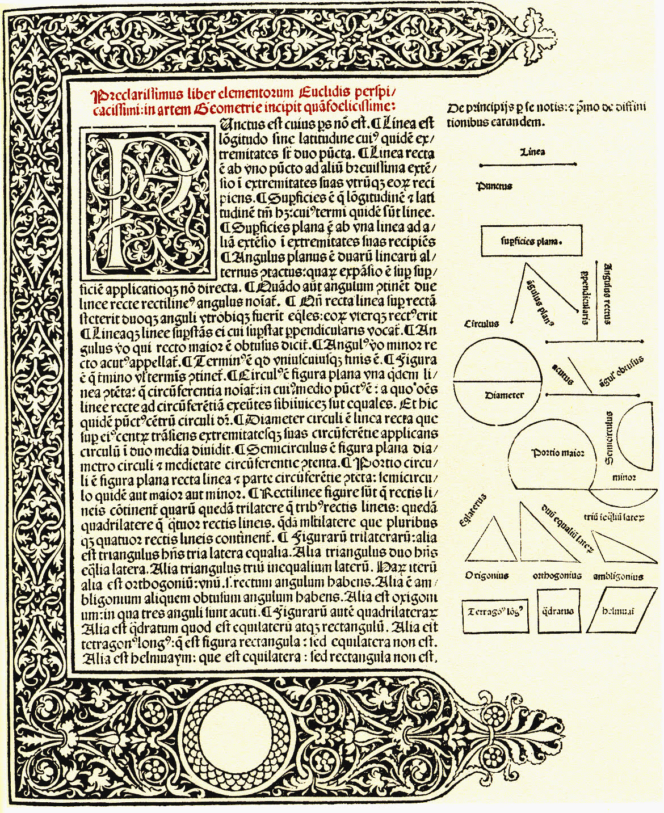
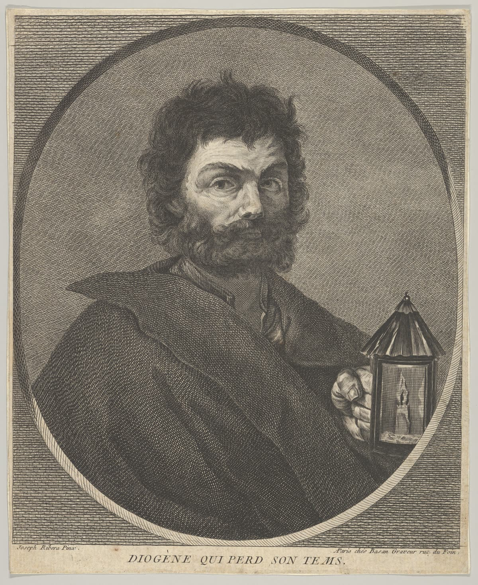
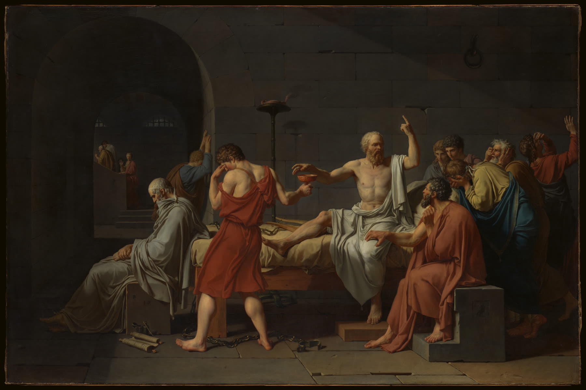
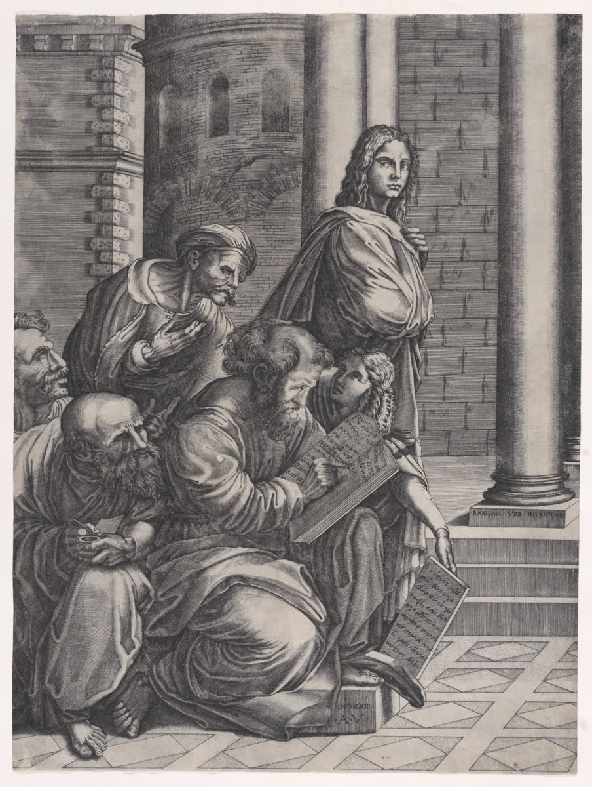
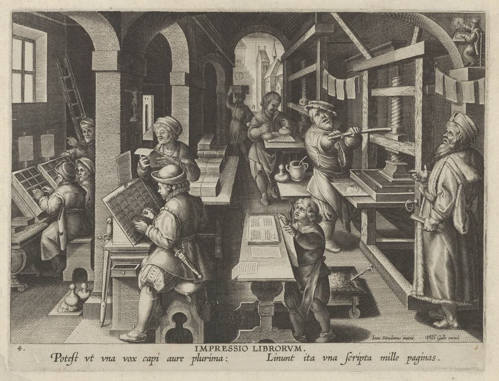

Ten reasoning-and-review skills that make your assistant question an idea, test a claim, weigh a plan or review a draft, step by step. One plugin for Claude (web, desktop, mobile, Claude Code), Codex and ChatGPT.
Herm of Socrates, Roman copy of a Greek original. Capitoline Museums, Rome.
What dia is
The Socratic question
,
the proof by contradiction

,
the critique on its own terms

:
old ways of thinking, turned into routines your assistant follows step by step.
Instructions only. The package is Markdown, YAML and JSON, with no scripts, so every skill also works in a chat with no tools. You need no background in philosophy to use it.
In your language. Skill files are in English; each skill replies in the language of your message. Every prompt on this page works in any language.
One plugin, everywhere. The same ten skills are written to run unchanged on Claude (web, desktop, mobile, Claude Code), Codex and ChatGPT. Free under the MIT License.
Ten skills
Each is a way of thinking people have used for a long time, turned into a routine the assistant follows. Pick one by what you want to do. The sessions are from the project’s README, run on Claude Code with this plugin and shortened; in the dialogues the user’s replies came from a simulated user. The wording you get will differ from run to run.
François-André Vincent, Alcibiades Being Taught by Socrates, 1776.
dia-confirm
Agree on the task before work starts.
Like a good contractor walking you through the job: here is what I’ll build, here is what I’m assuming, here is what only you can decide. Then it waits for your go-ahead instead of guessing.
Starts by name only.Start it with /dia:dia-confirm
Try this prompt
dia-confirm Write a short speech for my brother’s wedding.
AssistantGoal and success conditions: a short wedding speech about your brother, ready to read aloud, about 1–2 minutes, warm, with a toast. … Confirmation: reply “proceed” with your answers, or tell me to use a generic template.
YouMy brother is Minho, marrying Sara; I’m the best man. He taught me to ride a bike, even though he’s younger. Warm, one light joke, about 3 minutes. proceed
AssistantHere’s your speech, about 400 words… (the speech follows, built around the bike story)

Jacques-Louis David, The Death of Socrates, 1787.
dia-elenchus
Find out what you really mean.
The method Socrates uses in Plato’s dialogues. You say what you think something is; the assistant asks about one concrete case at a time until your own answers pull against your definition. Often you end up stuck, in aporia, and that is a result: you now know exactly which part you don’t know. It gives no advice during the dialogue.
Starts by name, or when you ask for a Socratic dialogue.Start it with /dia:dia-elenchus
Try this prompt
Socratic dialogue please. I think a good teacher is one whose students get high test scores.
AssistantI don’t know what makes a good teacher, so I’ll test your definition. Suppose a teacher gives the students the exam questions and answers the day before, and they all score high. Is that a good teacher?
YouNo, that’s basically cheating. Maybe a good teacher is one whose students get high scores because they actually learned the material.
…five more cases later…
YouThey could have, they just chose not to, so by my new idea that teacher isn’t good. That contradicts what I said earlier. I’m stuck. Where does that leave me?
AssistantYou’ve reached aporia, and that’s a result, not a failure.

Agostino Veneziano, The Group, from Raphael’s School of Athens, 1523.
dia-brainstorm
Grow a rough idea, then decide.
A coach who asks good questions, one at a time, before handing you options. Then you list options, it adds up to three of its own, you choose what matters, and it ends with a verdict and a short brief you can act on. It never builds the thing.
Starts by name, or when you ask for a Socratic brainstorm.Start it with /dia:dia-brainstorm
Try this prompt
Socratic brainstorm with me, keep it quick: I want to earn some extra money on weekends.
AssistantQuick mode, about 4 questions. Your idea is to earn some extra money on weekends, alongside your current job. Is that right, or did I assume something you didn’t mean?
YouRight. About 8 hours each weekend, roughly $300 a month, no more than $200 to start.
AssistantEight hours a weekend is about 32 hours a month, so $300 comes to about $9 an hour. What do you already know how to do that someone would plausibly pay for?
YouI’m good at photography and own a decent camera. Maybe photos for small local shops.
…more questions, options, criteria…
AssistantVerdict: open. … Next step: this week, post in two neighborhood groups offering 3–4 park slots, and track bookings, price paid and editing minutes per client.
Euclid’s Elements, first page of the first printed edition. Erhard Ratdolt, Venice, 1482.
dia-reductio
Check whether a claim holds together.
Reductio ad absurdum, or proof by contradiction: take a claim at its word, follow it step by step, and see whether it leads to two statements that can’t both be true. The assistant lists every premise, marks the ones it added itself, and leaves the choice of what to give up to you.
Starts by name, or in words.Start it with /dia:dia-reductio
Try this prompt
Use proof by contradiction on this claim: the customer is always right.
P1 [A] “right” means “true”; P2 [A] customer C1 says the coat was bought here and customer C2 says it was not, about the same coat; P3 [L] if not-p is true, p is not true.
Contradiction
lines 4 and 6. Strength: it rests on added premises P1 and P2, which are ordinary facts, not logic.
Recommendation
the repaired claim: “a customer’s good-faith complaint deserves a fair hearing and, where the business can, a remedy,” because it keeps what the slogan is for. The decision is yours.
[T] stated by the claim, [L] a rule of logic, [A] added by the assistant. A contradiction that needs an [A] premise is only as strong as that premise.
Diogenes holding a lantern, print after Jusepe de Ribera, 1750–69.
dia-negative
Hold a claim to its own standard.
Judge a claim by its own words, not by your values: take what it promises and look for real cases where it doesn’t deliver, then ask what it actually does, as a guess you could check. Named after Adorno’s “negative dialectics”. His immanent critique also draws on norms a practice implies without stating them; this skill does the narrower part, called internal critique: it holds a claim to the standard the claim itself states.
Starts by name, or in words.Start it with /dia:dia-negative
Try this prompt
Do an immanent critique of this claim: "We have an open-door policy, so anyone in the company can raise a problem with management at any time."
If your problem is with your manager, the open door opens onto the person you are complaining about, and the policy names no second path.
What it actually does (an inference)
it moves the blame for silence onto whoever didn’t walk through the door. What would prove this wrong: a record of complaints about managers raised through the policy and acted on.
Recommendation
change the practice. The decision is yours.
Honoré Daumier, Une péroraison à la Démosthène, from Les Gens de Justice, 1847.
dia-warrant
See how well the reasons support a conclusion.
Most everyday arguments make a conclusion likely rather than prove it: an expert said so, it worked for them, this causes that. The assistant lays the argument out in parts, after Stephen Toulmin: the claim, the data, the warrant (the rule that gets you from the data to the claim, usually left unsaid), its backing, the qualifier and the rebuttal. It asks Douglas Walton’s critical questions for that kind of argument and names the weakest link, in one pass. When the reasons pass through an in-between claim, each step gets its own warrant and the result says which step the weak link is on. It judges the support, never whether the claim is true.
Starts by name, or in words.Start it with /dia:dia-warrant
Try this prompt
How well do the reasons support this? "My friend is a personal trainer and she says running ruins your knees, so if I take up running I will get knee problems."
The argument is a chain: data → C1 → C. … Wa (reconstructed): What a personal trainer says about running’s effect on knees is generally reliable. This is the step from data to C1. Wb (reconstructed): If running generally ruins knees, then a person who takes up running will generally get knee problems. This is the step from C1 to C.
Critical questions
(eight, all open, among them) 1. [data] Is she a genuine expert in the field this claim belongs to? … 3. [warrant/backing] Is her assertion based on evidence? The argument cites none, only “she says.” Open.
Qualifier check
C says “will”. Wa and Wb license only “generally”, which is “probably”. So the claim is overstated.
Result
Weakest link: warrant (Wa), because “Is her assertion based on evidence?” is left open. … This audit doesn’t decide whether running causes knee problems.
C1 is the in-between claim “running ruins your knees”. “Reconstructed” means the assistant supplied it because the step needs it. In ask mode you fill in each part yourself, one question per message.
Attributed to Jacopo de’ Barbari, Portrait of Luca Pacioli, about 1495–1500.
dia-conjecture
Test an “always” rule against counterexamples.
A rule with “always”, “every” or “never” in it can be knocked down by one case that doesn’t fit. Following Imre Lakatos’s Proofs and Refutations, the assistant splits your reasons into numbered steps, then brings one counterexample per message and shows how it fits your rule and still breaks it. You decide whether each case counts; when one does, the assistant lists the repairs and recommends one, and you pick. It is for rules about what is the case, not for plans or policies.
Starts by name, or in words.Start it with /dia:dia-conjecture
Try this prompt
Find counterexamples to my rule: buying in bulk always saves money.
AssistantHere is the argument as numbered steps. L1 and L2 are your words. I wrote L3 to L5 because the argument needs them. … 4. [A] The extra costs of buying in bulk are zero or small compared with the per-item saving. These include a membership fee, storage space, upfront cash and transport. … Is this your argument?
…you narrow step 3 to things you use up, and say what would count against the rule…
AssistantCase 1 (both: against C′ and L4): a one-off club trip. Say you join a warehouse club for a $60 annual fee, just to buy a 40-roll pack of paper towels. … The per-roll saving is 40 × $0.25 = $10, but you paid $60 to get in. … It rests on arithmetic with numbers I made up… Does this count against your rule?
YouYeah, that counts. … I guess I’d have to say bulk saves money only when the extra costs, like a fee, are smaller than what I save.
AssistantYour fix is that bulk saves money only when the extra costs are smaller than what you save. That is true, but it doesn’t work as a repair. It says “bulk saves money when it saves money”, so no purchase could ever count against it. … 1. No attributable extra costs. … 2. Fees and special trips only. … 3. Give up C′. … I recommend option 1. … Which do you pick?
YouI’ll go with option 1. It covers storage and the trips too, not just the fee…
Annibale Carracci, The Choice of Hercules, 1596.
dia-counterplan
Hear the case for a different plan.
Dialectical inquiry, a planning method from management research (Richard Mason, 1969). The assistant lists the assumptions your plan rests on, keeps the ones that would change the decision if they were wrong, gives each a believable opposite, and builds the best rival plan on the same facts. Then you say which assumption of each pair you now hold; that mix is the result. If you only lean one way, the pair stays open with your lean noted. It gives no verdict on which plan wins, because it wrote both sides itself.
Starts by name, or in words.Start it with /dia:dia-counterplan
Try this prompt
Devil's advocate on this plan: we want to move from our two-bedroom city apartment to a bigger house in the suburbs before our kids (6 and 3) start school next September. The monthly payment is about the same as our rent now, the kids would each get their own room and a yard, and the school there has good reviews. The catch: my commute goes from 20 minutes to about an hour each way.
AssistantI’m giving no verdict. I wrote both sides, so the result will be your set of assumptions. … K1 = A2: Yes. If the commute isn’t sustainable, the main cost of the plan outweighs the gains. K2 = A1: Yes. If total cost is higher, “same as rent” no longer holds. … (five in all) Counterplan: stay in the city for now … For each pair K1–K5, which assumption do you now hold: the plan’s, the counterplan’s, your own wording, or “can’t tell”?
YouK1: Can’t tell yet. I can’t work from home, so the hour each way is real. … K2: Can’t tell yet. … Right now I’d say the counterplan’s worry is fair, but I don’t have the numbers. … K5: The plan’s, mostly. The kids fight over their shared room most nights…
AssistantYour rulings are in. Since K1–K3 are still open, the result is undetermined. … Your clarification on working from home now replaces my A6 as [T]. … Lean: counterplan, which I record as a lean, not a ruling. … Result: undetermined. Three pairs are open, one is held for the counterplan, and one is held for the plan with a caveat. … Hearing both sides is not evidence that the plan was tested.
Opening of Plato’s Euthyphro in the Clarke Plato, a manuscript copied in 895. Bodleian Library, Oxford.
dia-refine
One careful review of an answer or a draft.
A careful editor’s single pass: factual errors, logical leaps, missing requirements, repetition. It fixes only the errors it could confirm; the ones it suspects but couldn’t confirm are listed separately with the likely correction, so nothing changes silently.
Starts when dia-refine is the first word, or by name.Start it with /dia:dia-refine
Try this prompt
dia-refine check the facts: The Great Wall of China is the only man-made structure visible from the Moon with the naked eye, and it was built entirely during the Ming dynasty.
“visible from the Moon” is false (checked by search). “Built entirely during the Ming dynasty” is false: walls were joined under the Qin around 220 BC, and other dynasties added sections.
Correct content kept
the Ming built most of the stone wall seen today.
Remaining uncertainty
exact Qin and Han dates vary by source; only secondary sources were checked.

Jan Collaert I, The Invention of Book Printing, from Nova Reperta, about 1600.
dia-iterate
Check and fix in rounds.
Like dia-refine, but in rounds, and every fix needs outside evidence: a search, a tool run or a source you supplied. Facts that pass are locked so later rounds can’t undo them. It stops by itself on zero defects, when a round makes things worse, when nothing changes any more, when it can’t verify anything more, or at the round limit (--max N, default 3).
Starts only when dia-iterate is the first word, or by name.Start it with /dia:dia-iterate
Try this prompt
dia-iterate --max 2 check the dates and facts in this paragraph: "The first iPhone went on sale in 2008, and the App Store opened the same day with 500 apps."
“went on sale in 2008” → “2007” (on sale June 29, 2007). “the App Store opened the same day” → “about a year later, in July 2008”.
Round summary
round 1: 3 claims checked, 2 confirmed wrong, 1 correct, by web search. Stopped because no defects remained, so round 2 was not needed.
Corrected paragraph
“The first iPhone went on sale in 2007, and the App Store opened about a year later, in July 2008, with 500 apps.”
Install
Where you install decides where dia shows up. An install made on the web (claude.ai, chatgpt.com) is saved to your account and appears on the web and in the mobile app. An install made in a desktop app stays on that computer. To use dia everywhere, install it once on the web and once in each desktop app you use. All routes work on Windows; no Python or shell setup is needed.
Add the marketplace:
/plugin marketplace add ajitta/dialectic-skills
Install the plugin:
/plugin install dia@dialectic-skills
Update: /plugin marketplace update dialectic-skills, then update the plugin (or turn on auto-update for the marketplace).
A plugin you added on claude.ai also syncs into Claude Code when you sign in with the same account. Do not install it a second time from the command line.
Through the catalog instead: /plugin marketplace add ajitta/claude-plugins, then /plugin install dia@ajitta. Same code, different install name.
Update: codex plugin marketplace upgrade refreshes the marketplace; codex plugin list shows the installed version.
Without the plugin: copy skills/dia-<x>/ folders into ~/.agents/skills/. Skills copied this way are named $dia-<x> instead of $dia:dia-<x>.
Settings › Capabilities: turn on Code execution and file creation. Skills need it, even though no dia skill runs code.
Add the marketplace. Customize › Plugins › Add › Add marketplace, and enter:
ajitta/dialectic-skills
Copy the name rather than typing it: a misspelling such as dialectric fails with “Repository not found”. The Git URL https://github.com/ajitta/dialectic-skills.git works too.
Add the plugin. Adding the marketplace installs nothing yet. In Customize › Plugins, open Discover, select dia (Dialectic Skills), and select Add.
Check. Type /dia in the message box. Eleven entries, dia:dia-brainstorm to dia:dia-warrant (the ten skills and dia:dia-menu), should appear. Updates arrive through the marketplace.
Instead of steps 2 and 3 you can upload dialectic-skills.zip from the latest release: Customize › Plugins › Add › Upload plugin (not Customize › Skills). An upload does not update itself.
Claude desktop installs stay on that computer, and a plugin added on claude.ai did not appear in Claude desktop in the owner’s tests. If you use both, install in both places.
Add dia on claude.ai (the web), as in the claude.ai steps. There is no install step on the phone: a plugin added on the web is saved to your account and reaches the mobile app by itself. One added in Claude desktop does not.
Start the message with dia, for example:
dia 4 Every prime is odd.
dia alone lists the skills with numbers; a number or the first three letters of a name starts that skill; dia followed by your request picks the skill that fits. The mobile / menu does not list plugin skills, but the full name (/dia-brainstorm) and asking in words work too.
Web and mobile: upload the zip. Download dialectic-skills-openai.zip from the latest release and upload it on chatgpt.com with the plugin zip upload. It is saved to your account, so it appears on ChatGPT web and mobile. Upload each new release again.
Desktop app: add the marketplace (this computer only). Codex is part of the ChatGPT desktop app. Add a marketplace from the GitHub repository
ajitta/dialectic-skills
or the Git URL https://github.com/ajitta/dialectic-skills.git, then select dia in its plugin list and install it. Updates arrive through the marketplace.
On the phone, type @ and pick the skill, or start the message with its name (such as dia-brainstorm …; 1.2.0 and later).
On Business and Enterprise workspaces, an admin can also add the plugin for the whole workspace.
Start a skill
There are three ways. Since 1.2.0 the simplest, and the quickest on a phone, is to start the message with the skill name, with no /, $ or @.
In words
“use proof by contradiction on…”dia-reductio
“do an immanent critique of…”dia-negative
“Socratic dialogue please…”dia-elenchus
“Socratic brainstorm with me…”dia-brainstorm
“how well do the reasons support this?”dia-warrant
“find counterexamples to my rule…”dia-conjecture
“devil’s advocate on this plan…”dia-counterplan
By name, as the first word
Works for every skilldia-brainstorm …
Meant to start this way or by selectiondia-confirm …dia-refine …
Never starts from a plain requestdia-iterate …
Selected, per surface
claude.ai, Claude desktop, Claude Code/dia:dia-reductio
Claude mobile, typed in full/dia-brainstorm
Codex plugin, then a space$dia:dia-confirm write a backup script
Codex, copied folder$dia-refine
ChatGPT: type @, then pick@dia-negative
Options, as flags or plain words
What is examined: your claim, the assistant’s answer, a pasted text, or all--target=user|claude|text|all
Whose plan dia-counterplan examines: yours, the assistant’s earlier recommendation, or a pasted text--target=user|claude|text
Mode for dia-warrant: audit (default) lays out the whole check at once; ask has you fill in each part, one question per message--mode=ask
Round cap for dia-iterate, default 3--max N
Mode and depth for dia-brainstorm: develop (default) or stress; quick, standard (default) or deepstressquickdeep
Criteria for dia-refine and dia-iterate: anything after the namedia-refine for tone
Starting with the name was tested for 1.2.0 on Codex and in the ChatGPT mobile app. --target applies to dia-reductio, dia-negative and dia-warrant, and without all to dia-counterplan.
Visitors at the Parthenon, Athens, from the film Acropolis, 1921.
Can I ask for dia-elenchus and dia-brainstorm at once?
Yes. The definition dialogue comes first and the first message says so; brainstorming starts when you ask for options or the dialogue ends. The two are never interleaved.
And dia-refine with dia-iterate?
They run as two separate passes with separate outputs. The refine pass’s own re-derivation does not count as verification for an iterate round.
And dia-reductio with dia-negative?
Both run and both answers are complete, which makes for long output (around 9,000 characters in tests). On a phone, ask for one at a time.
dia-warrant, dia-conjecture or dia-counterplan sent me to another skill
These three check what you gave them first. If the request belongs to a sibling, they say so in one line and name it: a rule you mean only as “usually” goes to dia-warrant, a strict “always” claim to dia-conjecture, a plan’s assumptions to dia-counterplan, and a request to be questioned about your plan to dia-brainstorm. Ask again with the skill they name.
Can I get advice after dia-elenchus?
Ask, and the assistant says the Socratic part is over and labels each suggestion as its own. For a full options-and-plan session, name dia-brainstorm and it takes the record from there.
“Repository not found” when I add the marketplace
Check the spelling: ajitta/dialectic-skills (dialectic, not dialectric). The repository is public and needs no GitHub login.
No dia skills under / on Claude mobile
Expected: the mobile menu does not list plugin skills. Start the message with dia, type the full name (such as /dia-brainstorm), ask in words, or start the message with the skill name.
It works on one device but not another
Desktop installs stay on that computer; web installs are saved to your account and reach the mobile app. Install on the web for the web and mobile, and in each desktop app you use.
Every skill appears twice
The plugin is installed through two routes (for example dia@dialectic-skills and dia@ajitta, or an upload and a marketplace). Remove one.
claude.ai keeps an old version
If Check for updates leaves an old version, remove dia in Customize › Plugins and install it again from the dialectic-skills marketplace. Turn on Sync automatically for later releases.
On ChatGPT, a skill starts only from @
Most likely your upload is older than 1.2.0, where four skills were hidden from the model. Upload the latest dialectic-skills-openai.zip again; uploads do not update themselves.
dia-iterate does not start
It starts only when dia-iterate is the first word of the message or when it is selected explicitly (/dia:dia-iterate, $dia:dia-iterate, @dia-iterate).